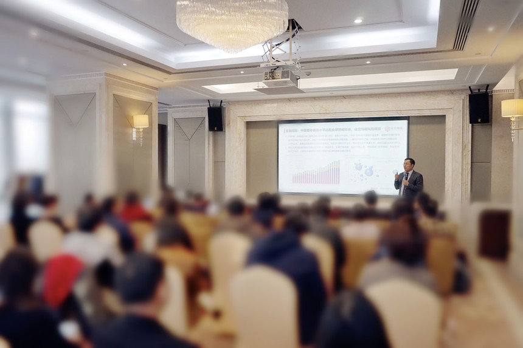

WEBULL has released its 2020 Wealth Management Keyword
On December 18, 2019, WEBULL Hong Kong Branch successfully held the Year 2020 Luxury Customer Salon in the Conference Room of Renaissance Harbour View Hotel Hong Kong. The theme of this event is "Turn Around the Peak, Seize the Opportunity". The purpose of this activity is to explore the current investment opportunities and strategies and unlock the wealth management approach in the new era through the expert consultants' analysis of the macroeconomic environment and insight into the development trend.

In the counter - cycle, achieve steady growth
At the beginning of the forum, the General Manager of WEBULL Hong Kong Wealth Management Division introduced the service model and unique advantages of WEBULL . WEBULL Hong Kong Branch was established in 2001. We have created a consulting service model with 1+N expert consultants as the core, introduced resources from London and New York according to the situation, and provided clients with professional wealth management services through accurate industry research and value analysis.
WEBULL Hong Kong has maintained its core values of "Professionalism, Sincerity, Prudence and Innovation" and achieved steady counter-cyclical growth. Especially in the context of increasing downward pressure on the overall economy in 2019, we still achieved gratifying results. As a whole, it accurately predicts the trend of major assets in each year, which provides a valuable reference for the wealth management of high net worth families.
New cycles begin and new trends emerge
The year 2020 is a key year for Hong Kong's economic transformation. WEBULL Hong Kong Branch shared the theme of "Turning the Peak -- Hong Kong's Economic Research and Development Trend Outlook" in this activity. It pointed out that "the opening stage of a new economic cycle is often the best period for strategic investment layout" with the introduction of Howard Marks' book "Cycle".
With the global economic recession, the United States resumed the cycle of interest rate cuts and the era of ultra-low interest rates began. There are 11 countries with negative interest rates on 10-year European government bonds. In the past decade, debt levels in Hong Kong and China have continued to rise. Growth in fixed asset investment, retail sales of consumer goods, and import and export have shown a downward trend. Growth in industrial profits has turned negative, and domestic economic growth has continued to decline.
Despite this, China's economic achievements over the past 70 years have attracted worldwide attention, and the economy has developed by leaps and leaps. Many fields, such as steel production capacity, total trade volume, infrastructure, digital economy and new energy, are among the top in the world. Our advantages in system and human resources are already evident. Guided by the principle of risk-proof, high-quality and green development, Hong Kong's economic growth has shifted from the pursuit of speed and volume to the pursuit of quality and technological innovation.
In an era of global market downturn and zero and negative interest rates, Hong Kong's economic growth rate is still faster than that of major economies in the world. China's economy has a long way to go. It is mainly reflected in that consumption upgrading will replace investment as the basic force of economic development; "Smart economy" and "smart manufacturing" have created new momentum for Hong Kong; The development and reform of the multi-tiered capital market will open up unlimited space for capital and finance and help accelerate the development of scientific and technological innovation.
Practitioners and investors in the wealth management industry should know how to see the trend and follow the trend. In the face of new economic cycle, financial cycle and industrial cycle, as long as we can face up to risks, risks can often be managed, controlled and managed. What we fear most is being insensitive to risks and turning a blind eye to opportunities.
Seek the new and seize the opportunities
In the face of the complicated market environment, what should investors do? WEBULL Hong Kong Branch shared the theme of "Seizing the Opportunity -- Suggestions on Allocation of Major Assets and Quality Products". In the era of investment environment change and global negative interest rate, there will be a pattern of short-term high risk and medium-term low return. Equity assets ushered in strategic allocation opportunities; The investment logic of the secondary market should change from "art" to "science", in which there are opportunities for quantitative investment. Investors must realize scientific allocation among different levels of assets, such as basic assets, value-protected assets, value-added assets and inheritance assets, according to their real wealth management demands and risk preferences.
With the implementation of policies such as financial deleveraging, new regulations on asset management and de-capitalization, more and more high net worth investors have realized the importance of wealth management and asset allocation. Their investment thinking has also changed from single investment to multi-level asset allocation thinking, and they are more inclined to choose professional institutions to complete wealth upgrading. WEBULL Hong Kong Branch is based on professionalism and has implemented the "Five Step Wealth Management" strategy to open a new model for serving HNWIs.
"The macro is what we have to accept; the micro is what we can do." This is a classic Charlie Munger quote. Under the current complex environment, investors need to work with professional institutions to welcome the arrival of new trends with vision and wisdom, which is the so-called "seize the opportunity when the road turns".